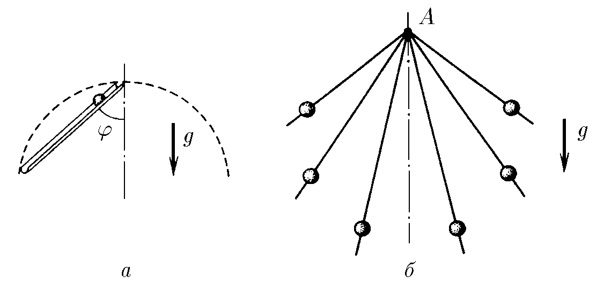

$1.3.2.$ a. From the top point of the circle, a ball begins to slide along a smooth chute at an angle $\varphi$ to the vertical. How long will it take for it to reach the circle, if its diameter is $D$?
b. From point $A$, small beads begin to slide along the spokes with different slopes at the same time without friction. What curve will the beads be on at time $t$?

For problem 1.3.2
Solution
Animation of the movement of the balls on the spokes
a) A ball will move along a smooth chute with acceleration equal to the projection of the free-fall acceleration in the direction of motion, i.e.
$$a = g \cdot cos{\varphi }$$
The displacement of the ball is the chord of a circle of diameter $D$, the magnitude of which is related to the diameter, by the following relation
$$r = D \cdot cos{\varphi }$$
Let's write further the equation of accelerated motion of the ball and from it find the time of motion
$${r=\frac{at^{2}}{2},\quad D\cos\varphi=\frac{g\cos\varphi}{2}t^{2},\quad t=\sqrt{\frac{2D}{g}} .}$$
$$\fbox{ $t=\sqrt{\frac{2D}{g}}$ } \; (1)$$
b) Note that the expression $(1)$ does not include the value of the angle, so all balls will be dropped simultaneously. They will lie on a circle of radius $r = g t^2/2$, as shown in the animation
Answer
$$\text{a. }t = \sqrt{2D/g}$$
$$\text{b. On a circle of radius }gt^{2}/2\text{ with top point }A.$$